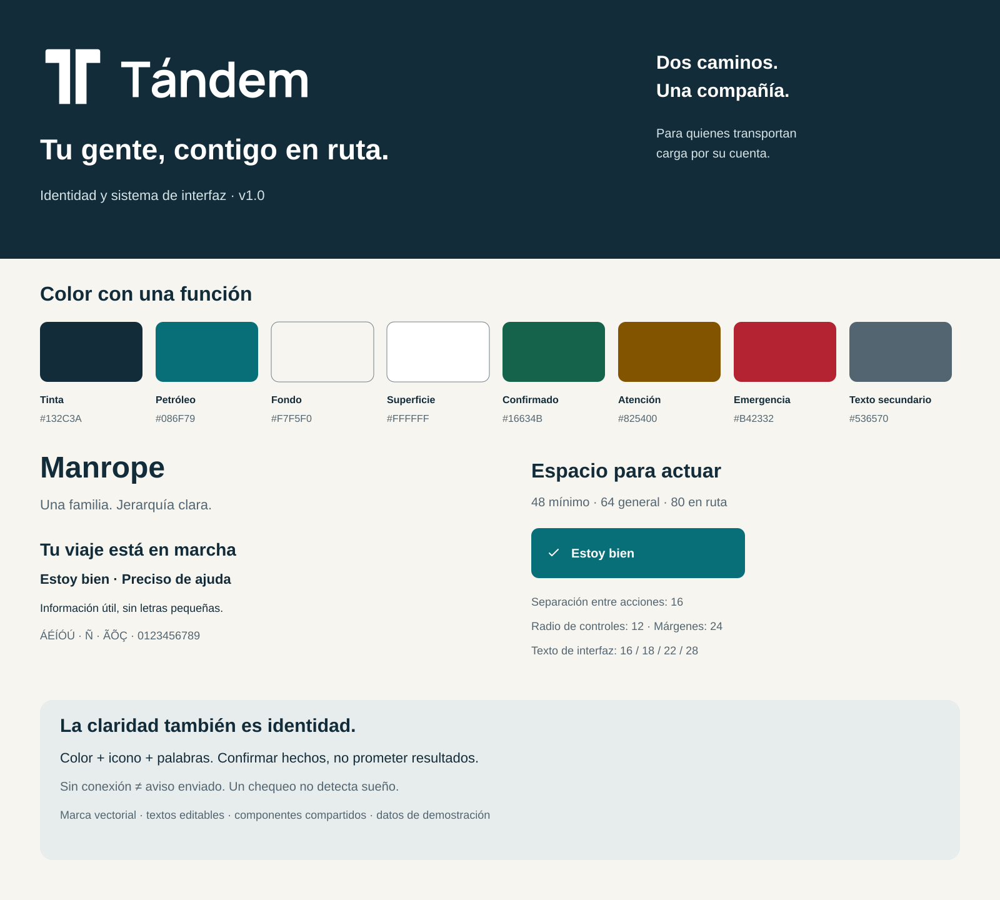

Sistema de diseño · v1.0
Claridad para cada momento del viaje.
Identidad, controles y estados para el conductor y las personas que lo acompañan.
Esta es una biblioteca visual. Todos los viajes y contactos son ejemplos; ningún control envía avisos ni activa seguimiento.

Valores de color y tipografía en texto
- Tinta: #132C3A
- Petróleo: #086F79
- Fondo: #F7F5F0
- Superficie: #FFFFFF
- Confirmado: #16634B
- Atención: #825400
- Emergencia: #B42332
- Texto secundario: #536570
Manrope, pesos 400, 500, 600 y 700. Texto de apoyo 16; cuerpo 18; subtítulos 22; títulos 28. Contraste documentado en evidence/contrast.json.
Componentes que dicen la verdad.
Ejemplos HTML para comprobar tamaño de texto, foco y disposición. Los botones solo registran una interacción de demostración.
Acciones en ruta
Sin acciones reales.
Estados de interacción
El estado pendiente no confirma recepción del servidor.
Destino del viaje
Puedes corregirlo antes de salir.
Escribe el destino para continuar.
Información disponible
Ubicación reciente14:32 · Precisión: ±20 m
Ubicación antiguaÚltima actualización: 14:20
Sin conexiónLos avisos siguen pendientes.
Entrega sin confirmarNo sabemos si llegó el aviso.
Português do Brasil
Sem ações reais.
Consentimiento e incidente
Ana aceptó acompañarteUbicación y avisos autorizados.
Invitación pendienteTodavía no tiene acceso.
SOS registradoReportado por el conductor. La entrega de avisos se confirma por separado.
Del primer mensaje a la respuesta.
Seis pantallas de referencia. Los SVG son editables; los mockups no constituyen la aplicación ni una prueba de uso al volante.